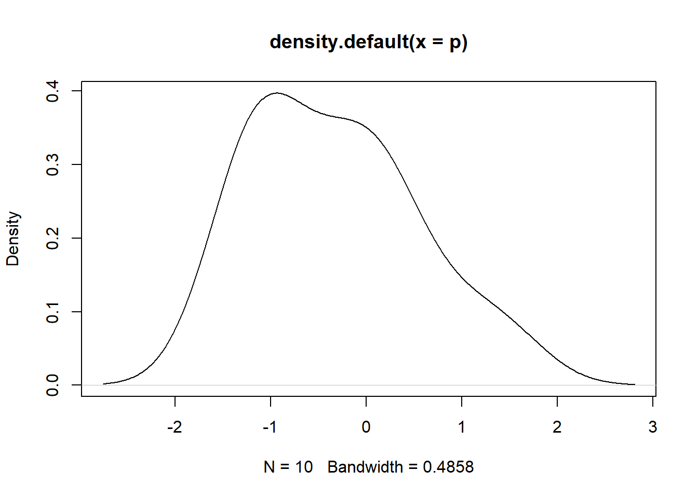
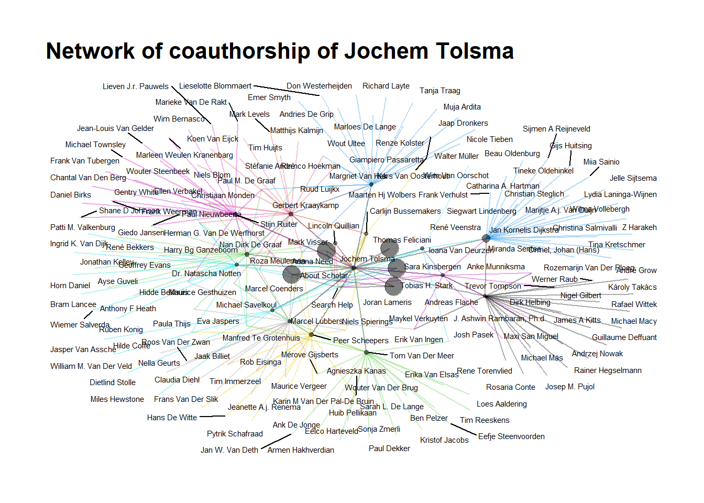

######################################### Title: Webscraping in R
######################################### 20-09-2023
# start with clean workspace
# rm(list = ls())
# install.packages("data.table")
library(data.table) # Package for faster data handling## Warning: package 'data.table' was built under R version 4.2.2library(tidyverse) ## Warning: package 'tidyverse' was built under R version 4.2.3## Warning: package 'ggplot2' was built under R version 4.2.3## Warning: package 'tibble' was built under R version 4.2.3## Warning: package 'tidyr' was built under R version 4.2.3## Warning: package 'readr' was built under R version 4.2.3## Warning: package 'purrr' was built under R version 4.2.3## Warning: package 'dplyr' was built under R version 4.2.3## Warning: package 'stringr' was built under R version 4.2.2## Warning: package 'forcats' was built under R version 4.2.3## Warning: package 'lubridate' was built under R version 4.2.3## ── Attaching core tidyverse packages ─────────────────── tidyverse 2.0.0 ──
## ✔ dplyr 1.1.3 ✔ readr 2.1.4
## ✔ forcats 1.0.0 ✔ stringr 1.5.0
## ✔ ggplot2 3.4.3 ✔ tibble 3.2.1
## ✔ lubridate 1.9.2 ✔ tidyr 1.3.0
## ✔ purrr 1.0.2
## ── Conflicts ───────────────────────────────────── tidyverse_conflicts() ──
## ✖ lubridate::%--%() masks igraph::%--%()
## ✖ dplyr::as_data_frame() masks tibble::as_data_frame(), igraph::as_data_frame()
## ✖ dplyr::between() masks data.table::between()
## ✖ purrr::compose() masks igraph::compose()
## ✖ tidyr::crossing() masks igraph::crossing()
## ✖ dplyr::filter() masks stats::filter()
## ✖ dplyr::first() masks data.table::first()
## ✖ dplyr::groups() masks igraph::groups()
## ✖ lubridate::hour() masks data.table::hour()
## ✖ lubridate::isoweek() masks data.table::isoweek()
## ✖ dplyr::lag() masks stats::lag()
## ✖ dplyr::last() masks data.table::last()
## ✖ lubridate::mday() masks data.table::mday()
## ✖ lubridate::minute() masks data.table::minute()
## ✖ lubridate::month() masks data.table::month()
## ✖ lubridate::quarter() masks data.table::quarter()
## ✖ lubridate::second() masks data.table::second()
## ✖ purrr::simplify() masks igraph::simplify()
## ✖ purrr::transpose() masks data.table::transpose()
## ✖ lubridate::wday() masks data.table::wday()
## ✖ lubridate::week() masks data.table::week()
## ✖ lubridate::yday() masks data.table::yday()
## ✖ lubridate::year() masks data.table::year()
## ℹ Use the conflicted package (<http://conflicted.r-lib.org/>) to force all conflicts to become errors# install.packages('httr')
library(httr) # we don't need this for now require(httr)## Warning: package 'httr' was built under R version 4.2.3# install.packages("xml2")
require(xml2)## Loading required package: xml2## Warning: package 'xml2' was built under R version 4.2.3# install.packages("rvest")
require(rvest)## Loading required package: rvest## Warning: package 'rvest' was built under R version 4.2.3##
## Attaching package: 'rvest'
##
## The following object is masked from 'package:readr':
##
## guess_encoding# install.packages("devtools")
require(devtools)## Loading required package: devtools## Warning: package 'devtools' was built under R version 4.2.3## Loading required package: usethis## Warning: package 'usethis' was built under R version 4.2.3# devtools::install_github("jkeirstead/scholar")
require(scholar)## Loading required package: scholar# setwd(dirname(rstudioapi::getSourceEditorContext()$path))# Let's first get the staff page read_html is a function that simply extracts html webpages and puts them in xml format
soc_staff <- read_html("https://www.ru.nl/sociology/research/staff/")
head(soc_staff)## $node
## <pointer: 0x000001986abcbce0>
##
## $doc
## <pointer: 0x0000019876fe70d0>class(soc_staff)## [1] "xml_document" "xml_node"# so we need to find WHERE the table is located in the html 'inspect element' in mozilla firefox or 'view page source' and you see that everything AFTER /td in the 'body' of the page seems to be the table we do need
soc_staff <- soc_staff %>%
rvest::html_nodes("body") %>%
xml2::xml_find_all("//td") %>%
rvest::html_text()
soc_staff## [1] "Staff:"
## [2] "Expertise:"
## [3] "Batenburg, prof. dr. R. (Ronald)"
## [4] "Healthcare, labour market and healthcare professions and training"
## [5] "Begall, dr. K.H. (Katia)"
## [6] "Family, life course, labour market participation, division of household tasks and gender norms"
## [7] "Bekhuis, dr. H. (Hidde)"
## [8] "Welfare state, nationalism and sports"
## [9] "Berg, dr. L. van den (Lonneke)"
## [10] "Family, life course and transition to adulthood"
## [11] "Blommaert, dr. L. (Lieselotte)"
## [12] "Discrimination and inequality on the labour market"
## [13] "Eisinga, prof. dr. R.N. (Rob)"
## [14] "Methods of research and statistics"
## [15] "Gesthuizen, dr. M.J.W. (Maurice)"
## [16] "\r\n Poverty en social cohesion\r\n "
## [17] "Geurts, dr. P.G. (Nella)"
## [18] "\r\n Integration and migration\r\n "
## [19] "Glas, dr. S. (Saskia)"
## [20] "Islam, gender attitudes and sexuality"
## [21] "Hek, dr. M. van (Margriet)"
## [22] "Educational inequality, gender inequality, organizational sociology and culture"
## [23] "Hoekman, dr. R. H. A.(Remco)"
## [24] "Sports and policy sociology"
## [25] "Hofstra, dr. B. (Bas)"
## [26] "Diversity, inequality and innovation"
## [27] "Koops, dr. J. (Judith)"
## [28] "Family sociology and demography"
## [29] "Kraaykamp, prof. dr. G.L.M. (Gerbert)"
## [30] "Educational inequality, culture and health"
## [31] "Meuleman, dr. (Roza)"
## [32] "Culture and nationalism"
## [33] "Savelkoul, dr. M.J. (Michael)"
## [34] "Ethnic diversity, prejudice and social cohesion"
## [35] "Scheepers, prof. dr. P.L.H. (Peer)"
## [36] "Comparative research, social cohesion and diversity"
## [37] "Spierings, dr. C.H.B.M. (Niels)"
## [38] "Islam, gender, populism, social media, Middle East and migration"
## [39] "Tolsma, dr. J. (Jochem)"
## [40] "Inequality, criminology and ethnic diversity"
## [41] "\r\n Verbakel, prof. dr. C.M.C. (Ellen)\r\n Head of the department\r\n "
## [42] "Health, family and work"
## [43] "Visser, dr. M. (Mark)"
## [44] "Older workers, radicalism and social cohesion"
## [45] "Wolbers, prof. dr. M.H.J. (Maarten)"
## [46] "Educational inequality and labour market inequality"
## [47] "PhD:"
## [48] "Expertise:"
## [49] "Bussemakers, C. (Carlijn) MSc"
## [50] "Adverse youth experiences and social inequality"
## [51] "Franken, R. (Rob) MSc"
## [52] "Sport networks and motivation for sustainable sports participation"
## [53] "Firat, M. (Mustafa) MSc"
## [54] "Social inequality, older workers, life course and retirement"
## [55] "\r\n Güneyli, A. (Ayşegül)\r\n "
## [56] "Work-care"
## [57] "Hendriks, I.P. (Inge) MSc"
## [58] "Resistance to refugees and social cohesion"
## [59] "Jeroense, T.M.G. (Thijmen) MSc"
## [60] "Political participation, segregation, opinion polarization and voting behaviour"
## [61] "Kollar, R. (Rachel)"
## [62] "Spirit project"
## [63] "Linders, N. (Nik) MSc"
## [64] "Populism, gender, masculinity and sexuality"
## [65] "Loh, S.M. (Renae) MSc"
## [66] "Educational sociology, social stratification, gender inequality and information communication technology (ICT)"
## [67] "Meijeren, M. (Maikel) MSc"
## [68] "Social capital, volunteer work and diversity"
## [69] "Mensvoort, C.A. van (Carly) MSc"
## [70] "Gender, leadership and social norms"
## [71] "\r\n Mulders, A.M. (Anne Maaike) MSc\r\n "
## [72] "Social inequality in science"
## [73] "Müller, K. (Katrin) MSc"
## [74] "Opinions about discrimination, migration and inequality"
## [75] "Raiber, K. (Klara) MSc"
## [76] "Informal care, employment, social inequality and gender"
## [77] "Ramaekers, M.J.M. (Marlou) MSc"
## [78] "Prosocial behaviour and family"
## [79] "Wiertsema, S. (Sara) MSc"
## [80] "Inequality in sports and physical activity, school-to-work transition and employment"
## [81] "External PhD:"
## [82] "Expertise:"
## [83] "Betkó, drs. J.G. (János)"
## [84] "Social assistance benefit, poverty, reintegration, RCT and social experiment"
## [85] "Middendorp J. (Jansje) van MSc"
## [86] "Home administration"
## [87] "Vis, E. (Elize) MSc"
## [88] "Healthcare, labour market, healthcare professions and training, health and social capital"
## [89] "Weber, T. (Tijmen) MSc"
## [90] "International student mobility and the internationalization of higher education"
## [91] "Guest researchers:"
## [92] "Expertise:"
## [93] "Khawli, E. el (Elissa) post-doc, Dr."
## [94] "Inequality in older age"
## [95] "Sterkens, dr. C.J.A. (Carl)"
## [96] "Religious conflicts, cohesion, religion and the philosophy of life"
## [97] "Vermeer, dr. P.A.D.M. (Paul)"
## [98] "Socialization processes, secularisation, religion and the philosophy of life"
## [99] "Other researchers:"
## [100] "Expertise:"
## [101] "Grubben, M. (Malou)"
## [102] "Inequality in sports and movement"fodd <- function(x) x%%2 != 0
feven <- function(x) x%%2 == 0
nstaf <- length(soc_staff)
nstaf## [1] 102# Do you understand why we need the nstaf? What it does? --> nstaf gives the number of staff in the department of Sociology
soc_names <- soc_staff[fodd(1:nstaf)]
head(soc_names)## [1] "Staff:" "Batenburg, prof. dr. R. (Ronald)"
## [3] "Begall, dr. K.H. (Katia)" "Bekhuis, dr. H. (Hidde)"
## [5] "Berg, dr. L. van den (Lonneke)" "Blommaert, dr. L. (Lieselotte)"soc_experts <- soc_staff[feven(1:nstaf)]
head(soc_experts)## [1] "Expertise:"
## [2] "Healthcare, labour market and healthcare professions and training"
## [3] "Family, life course, labour market participation, division of household tasks and gender norms"
## [4] "Welfare state, nationalism and sports"
## [5] "Family, life course and transition to adulthood"
## [6] "Discrimination and inequality on the labour market"soc_df <- data.frame(cbind(soc_names, soc_experts)) # columnbind those and we have a DF for soc staff!
soc_df## soc_names
## 1 Staff:
## 2 Batenburg, prof. dr. R. (Ronald)
## 3 Begall, dr. K.H. (Katia)
## 4 Bekhuis, dr. H. (Hidde)
## 5 Berg, dr. L. van den (Lonneke)
## 6 Blommaert, dr. L. (Lieselotte)
## 7 Eisinga, prof. dr. R.N. (Rob)
## 8 Gesthuizen, dr. M.J.W. (Maurice)
## 9 Geurts, dr. P.G. (Nella)
## 10 Glas, dr. S. (Saskia)
## 11 Hek, dr. M. van (Margriet)
## 12 Hoekman, dr. R. H. A.(Remco)
## 13 Hofstra, dr. B. (Bas)
## 14 Koops, dr. J. (Judith)
## 15 Kraaykamp, prof. dr. G.L.M. (Gerbert)
## 16 Meuleman, dr. (Roza)
## 17 Savelkoul, dr. M.J. (Michael)
## 18 Scheepers, prof. dr. P.L.H. (Peer)
## 19 Spierings, dr. C.H.B.M. (Niels)
## 20 Tolsma, dr. J. (Jochem)
## 21 \r\n Verbakel, prof. dr. C.M.C. (Ellen)\r\n Head of the department\r\n
## 22 Visser, dr. M. (Mark)
## 23 Wolbers, prof. dr. M.H.J. (Maarten)
## 24 PhD:
## 25 Bussemakers, C. (Carlijn) MSc
## 26 Franken, R. (Rob) MSc
## 27 Firat, M. (Mustafa) MSc
## 28 \r\n Güneyli, A. (Ayşegül)\r\n
## 29 Hendriks, I.P. (Inge) MSc
## 30 Jeroense, T.M.G. (Thijmen) MSc
## 31 Kollar, R. (Rachel)
## 32 Linders, N. (Nik) MSc
## 33 Loh, S.M. (Renae) MSc
## 34 Meijeren, M. (Maikel) MSc
## 35 Mensvoort, C.A. van (Carly) MSc
## 36 \r\n Mulders, A.M. (Anne Maaike) MSc\r\n
## 37 Müller, K. (Katrin) MSc
## 38 Raiber, K. (Klara) MSc
## 39 Ramaekers, M.J.M. (Marlou) MSc
## 40 Wiertsema, S. (Sara) MSc
## 41 External PhD:
## 42 Betkó, drs. J.G. (János)
## 43 Middendorp J. (Jansje) van MSc
## 44 Vis, E. (Elize) MSc
## 45 Weber, T. (Tijmen) MSc
## 46 Guest researchers:
## 47 Khawli, E. el (Elissa) post-doc, Dr.
## 48 Sterkens, dr. C.J.A. (Carl)
## 49 Vermeer, dr. P.A.D.M. (Paul)
## 50 Other researchers:
## 51 Grubben, M. (Malou)
## soc_experts
## 1 Expertise:
## 2 Healthcare, labour market and healthcare professions and training
## 3 Family, life course, labour market participation, division of household tasks and gender norms
## 4 Welfare state, nationalism and sports
## 5 Family, life course and transition to adulthood
## 6 Discrimination and inequality on the labour market
## 7 Methods of research and statistics
## 8 \r\n Poverty en social cohesion\r\n
## 9 \r\n Integration and migration\r\n
## 10 Islam, gender attitudes and sexuality
## 11 Educational inequality, gender inequality, organizational sociology and culture
## 12 Sports and policy sociology
## 13 Diversity, inequality and innovation
## 14 Family sociology and demography
## 15 Educational inequality, culture and health
## 16 Culture and nationalism
## 17 Ethnic diversity, prejudice and social cohesion
## 18 Comparative research, social cohesion and diversity
## 19 Islam, gender, populism, social media, Middle East and migration
## 20 Inequality, criminology and ethnic diversity
## 21 Health, family and work
## 22 Older workers, radicalism and social cohesion
## 23 Educational inequality and labour market inequality
## 24 Expertise:
## 25 Adverse youth experiences and social inequality
## 26 Sport networks and motivation for sustainable sports participation
## 27 Social inequality, older workers, life course and retirement
## 28 Work-care
## 29 Resistance to refugees and social cohesion
## 30 Political participation, segregation, opinion polarization and voting behaviour
## 31 Spirit project
## 32 Populism, gender, masculinity and sexuality
## 33 Educational sociology, social stratification, gender inequality and information communication technology (ICT)
## 34 Social capital, volunteer work and diversity
## 35 Gender, leadership and social norms
## 36 Social inequality in science
## 37 Opinions about discrimination, migration and inequality
## 38 Informal care, employment, social inequality and gender
## 39 Prosocial behaviour and family
## 40 Inequality in sports and physical activity, school-to-work transition and employment
## 41 Expertise:
## 42 Social assistance benefit, poverty, reintegration, RCT and social experiment
## 43 Home administration
## 44 Healthcare, labour market, healthcare professions and training, health and social capital
## 45 International student mobility and the internationalization of higher education
## 46 Expertise:
## 47 Inequality in older age
## 48 Religious conflicts, cohesion, religion and the philosophy of life
## 49 Socialization processes, secularisation, religion and the philosophy of life
## 50 Expertise:
## 51 Inequality in sports and movement# inspect again, and remove the rows we don't need (check for yourself to be certain!)
delrows <- which(soc_df$soc_names == "Staff:" | soc_df$soc_names == "PhD:" | soc_df$soc_names == "External PhD:" |
soc_df$soc_names == "Guest researchers:" | soc_df$soc_names == "Other researchers:")
soc_df <- soc_df[-delrows, ]
soc_df## soc_names
## 2 Batenburg, prof. dr. R. (Ronald)
## 3 Begall, dr. K.H. (Katia)
## 4 Bekhuis, dr. H. (Hidde)
## 5 Berg, dr. L. van den (Lonneke)
## 6 Blommaert, dr. L. (Lieselotte)
## 7 Eisinga, prof. dr. R.N. (Rob)
## 8 Gesthuizen, dr. M.J.W. (Maurice)
## 9 Geurts, dr. P.G. (Nella)
## 10 Glas, dr. S. (Saskia)
## 11 Hek, dr. M. van (Margriet)
## 12 Hoekman, dr. R. H. A.(Remco)
## 13 Hofstra, dr. B. (Bas)
## 14 Koops, dr. J. (Judith)
## 15 Kraaykamp, prof. dr. G.L.M. (Gerbert)
## 16 Meuleman, dr. (Roza)
## 17 Savelkoul, dr. M.J. (Michael)
## 18 Scheepers, prof. dr. P.L.H. (Peer)
## 19 Spierings, dr. C.H.B.M. (Niels)
## 20 Tolsma, dr. J. (Jochem)
## 21 \r\n Verbakel, prof. dr. C.M.C. (Ellen)\r\n Head of the department\r\n
## 22 Visser, dr. M. (Mark)
## 23 Wolbers, prof. dr. M.H.J. (Maarten)
## 25 Bussemakers, C. (Carlijn) MSc
## 26 Franken, R. (Rob) MSc
## 27 Firat, M. (Mustafa) MSc
## 28 \r\n Güneyli, A. (Ayşegül)\r\n
## 29 Hendriks, I.P. (Inge) MSc
## 30 Jeroense, T.M.G. (Thijmen) MSc
## 31 Kollar, R. (Rachel)
## 32 Linders, N. (Nik) MSc
## 33 Loh, S.M. (Renae) MSc
## 34 Meijeren, M. (Maikel) MSc
## 35 Mensvoort, C.A. van (Carly) MSc
## 36 \r\n Mulders, A.M. (Anne Maaike) MSc\r\n
## 37 Müller, K. (Katrin) MSc
## 38 Raiber, K. (Klara) MSc
## 39 Ramaekers, M.J.M. (Marlou) MSc
## 40 Wiertsema, S. (Sara) MSc
## 42 Betkó, drs. J.G. (János)
## 43 Middendorp J. (Jansje) van MSc
## 44 Vis, E. (Elize) MSc
## 45 Weber, T. (Tijmen) MSc
## 47 Khawli, E. el (Elissa) post-doc, Dr.
## 48 Sterkens, dr. C.J.A. (Carl)
## 49 Vermeer, dr. P.A.D.M. (Paul)
## 51 Grubben, M. (Malou)
## soc_experts
## 2 Healthcare, labour market and healthcare professions and training
## 3 Family, life course, labour market participation, division of household tasks and gender norms
## 4 Welfare state, nationalism and sports
## 5 Family, life course and transition to adulthood
## 6 Discrimination and inequality on the labour market
## 7 Methods of research and statistics
## 8 \r\n Poverty en social cohesion\r\n
## 9 \r\n Integration and migration\r\n
## 10 Islam, gender attitudes and sexuality
## 11 Educational inequality, gender inequality, organizational sociology and culture
## 12 Sports and policy sociology
## 13 Diversity, inequality and innovation
## 14 Family sociology and demography
## 15 Educational inequality, culture and health
## 16 Culture and nationalism
## 17 Ethnic diversity, prejudice and social cohesion
## 18 Comparative research, social cohesion and diversity
## 19 Islam, gender, populism, social media, Middle East and migration
## 20 Inequality, criminology and ethnic diversity
## 21 Health, family and work
## 22 Older workers, radicalism and social cohesion
## 23 Educational inequality and labour market inequality
## 25 Adverse youth experiences and social inequality
## 26 Sport networks and motivation for sustainable sports participation
## 27 Social inequality, older workers, life course and retirement
## 28 Work-care
## 29 Resistance to refugees and social cohesion
## 30 Political participation, segregation, opinion polarization and voting behaviour
## 31 Spirit project
## 32 Populism, gender, masculinity and sexuality
## 33 Educational sociology, social stratification, gender inequality and information communication technology (ICT)
## 34 Social capital, volunteer work and diversity
## 35 Gender, leadership and social norms
## 36 Social inequality in science
## 37 Opinions about discrimination, migration and inequality
## 38 Informal care, employment, social inequality and gender
## 39 Prosocial behaviour and family
## 40 Inequality in sports and physical activity, school-to-work transition and employment
## 42 Social assistance benefit, poverty, reintegration, RCT and social experiment
## 43 Home administration
## 44 Healthcare, labour market, healthcare professions and training, health and social capital
## 45 International student mobility and the internationalization of higher education
## 47 Inequality in older age
## 48 Religious conflicts, cohesion, religion and the philosophy of life
## 49 Socialization processes, secularisation, religion and the philosophy of life
## 51 Inequality in sports and movement# Last name seems to be everything before the comma
soc_df$last_name <- gsub(",.*$", "", soc_df$soc_names)
# first name is everything between brackets
soc_df$first_name <- str_extract_all(soc_df$soc_names, "(?<=\\().+?(?=\\))", simplify = TRUE)
soc_df$last_name <- gsub(" J. \\(Jansje\\) van MSc", "", soc_df$last_name)
soc_df$first_name <- tolower(soc_df$first_name) # everything to lower!
soc_df$last_name <- tolower(soc_df$last_name)
# trimws looses all spacing before and after (if you specify 'both') a character string
soc_df$last_name <- trimws(soc_df$last_name, which = c("both"), whitespace = "[ \t\r\n]")
soc_df$first_name <- trimws(soc_df$first_name, which = c("both"), whitespace = "[ \t\r\n]")
soc_df$soc_experts <- trimws(soc_df$soc_experts, which = c("both"), whitespace = "[ \t\r\n]")
soc_df$soc_names <- trimws(soc_df$soc_names, which = c("both"), whitespace = "[ \t\r\n]")
# set affiliation to radboud, comes in handy for querying google scholar
soc_df$affiliation <- "radboud university"
soc_df## soc_names
## 2 Batenburg, prof. dr. R. (Ronald)
## 3 Begall, dr. K.H. (Katia)
## 4 Bekhuis, dr. H. (Hidde)
## 5 Berg, dr. L. van den (Lonneke)
## 6 Blommaert, dr. L. (Lieselotte)
## 7 Eisinga, prof. dr. R.N. (Rob)
## 8 Gesthuizen, dr. M.J.W. (Maurice)
## 9 Geurts, dr. P.G. (Nella)
## 10 Glas, dr. S. (Saskia)
## 11 Hek, dr. M. van (Margriet)
## 12 Hoekman, dr. R. H. A.(Remco)
## 13 Hofstra, dr. B. (Bas)
## 14 Koops, dr. J. (Judith)
## 15 Kraaykamp, prof. dr. G.L.M. (Gerbert)
## 16 Meuleman, dr. (Roza)
## 17 Savelkoul, dr. M.J. (Michael)
## 18 Scheepers, prof. dr. P.L.H. (Peer)
## 19 Spierings, dr. C.H.B.M. (Niels)
## 20 Tolsma, dr. J. (Jochem)
## 21 Verbakel, prof. dr. C.M.C. (Ellen)\r\n Head of the department
## 22 Visser, dr. M. (Mark)
## 23 Wolbers, prof. dr. M.H.J. (Maarten)
## 25 Bussemakers, C. (Carlijn) MSc
## 26 Franken, R. (Rob) MSc
## 27 Firat, M. (Mustafa) MSc
## 28 Güneyli, A. (Ayşegül)
## 29 Hendriks, I.P. (Inge) MSc
## 30 Jeroense, T.M.G. (Thijmen) MSc
## 31 Kollar, R. (Rachel)
## 32 Linders, N. (Nik) MSc
## 33 Loh, S.M. (Renae) MSc
## 34 Meijeren, M. (Maikel) MSc
## 35 Mensvoort, C.A. van (Carly) MSc
## 36 Mulders, A.M. (Anne Maaike) MSc
## 37 Müller, K. (Katrin) MSc
## 38 Raiber, K. (Klara) MSc
## 39 Ramaekers, M.J.M. (Marlou) MSc
## 40 Wiertsema, S. (Sara) MSc
## 42 Betkó, drs. J.G. (János)
## 43 Middendorp J. (Jansje) van MSc
## 44 Vis, E. (Elize) MSc
## 45 Weber, T. (Tijmen) MSc
## 47 Khawli, E. el (Elissa) post-doc, Dr.
## 48 Sterkens, dr. C.J.A. (Carl)
## 49 Vermeer, dr. P.A.D.M. (Paul)
## 51 Grubben, M. (Malou)
## soc_experts
## 2 Healthcare, labour market and healthcare professions and training
## 3 Family, life course, labour market participation, division of household tasks and gender norms
## 4 Welfare state, nationalism and sports
## 5 Family, life course and transition to adulthood
## 6 Discrimination and inequality on the labour market
## 7 Methods of research and statistics
## 8 Poverty en social cohesion
## 9 Integration and migration
## 10 Islam, gender attitudes and sexuality
## 11 Educational inequality, gender inequality, organizational sociology and culture
## 12 Sports and policy sociology
## 13 Diversity, inequality and innovation
## 14 Family sociology and demography
## 15 Educational inequality, culture and health
## 16 Culture and nationalism
## 17 Ethnic diversity, prejudice and social cohesion
## 18 Comparative research, social cohesion and diversity
## 19 Islam, gender, populism, social media, Middle East and migration
## 20 Inequality, criminology and ethnic diversity
## 21 Health, family and work
## 22 Older workers, radicalism and social cohesion
## 23 Educational inequality and labour market inequality
## 25 Adverse youth experiences and social inequality
## 26 Sport networks and motivation for sustainable sports participation
## 27 Social inequality, older workers, life course and retirement
## 28 Work-care
## 29 Resistance to refugees and social cohesion
## 30 Political participation, segregation, opinion polarization and voting behaviour
## 31 Spirit project
## 32 Populism, gender, masculinity and sexuality
## 33 Educational sociology, social stratification, gender inequality and information communication technology (ICT)
## 34 Social capital, volunteer work and diversity
## 35 Gender, leadership and social norms
## 36 Social inequality in science
## 37 Opinions about discrimination, migration and inequality
## 38 Informal care, employment, social inequality and gender
## 39 Prosocial behaviour and family
## 40 Inequality in sports and physical activity, school-to-work transition and employment
## 42 Social assistance benefit, poverty, reintegration, RCT and social experiment
## 43 Home administration
## 44 Healthcare, labour market, healthcare professions and training, health and social capital
## 45 International student mobility and the internationalization of higher education
## 47 Inequality in older age
## 48 Religious conflicts, cohesion, religion and the philosophy of life
## 49 Socialization processes, secularisation, religion and the philosophy of life
## 51 Inequality in sports and movement
## last_name first_name affiliation
## 2 batenburg ronald radboud university
## 3 begall katia radboud university
## 4 bekhuis hidde radboud university
## 5 berg lonneke radboud university
## 6 blommaert lieselotte radboud university
## 7 eisinga rob radboud university
## 8 gesthuizen maurice radboud university
## 9 geurts nella radboud university
## 10 glas saskia radboud university
## 11 hek margriet radboud university
## 12 hoekman remco radboud university
## 13 hofstra bas radboud university
## 14 koops judith radboud university
## 15 kraaykamp gerbert radboud university
## 16 meuleman roza radboud university
## 17 savelkoul michael radboud university
## 18 scheepers peer radboud university
## 19 spierings niels radboud university
## 20 tolsma jochem radboud university
## 21 verbakel ellen radboud university
## 22 visser mark radboud university
## 23 wolbers maarten radboud university
## 25 bussemakers carlijn radboud university
## 26 franken rob radboud university
## 27 firat mustafa radboud university
## 28 güneyli ayşegül radboud university
## 29 hendriks inge radboud university
## 30 jeroense thijmen radboud university
## 31 kollar rachel radboud university
## 32 linders nik radboud university
## 33 loh renae radboud university
## 34 meijeren maikel radboud university
## 35 mensvoort carly radboud university
## 36 mulders anne maaike radboud university
## 37 müller katrin radboud university
## 38 raiber klara radboud university
## 39 ramaekers marlou radboud university
## 40 wiertsema sara radboud university
## 42 betkó jános radboud university
## 43 middendorp jansje radboud university
## 44 vis elize radboud university
## 45 weber tijmen radboud university
## 47 khawli elissa radboud university
## 48 sterkens carl radboud university
## 49 vermeer paul radboud university
## 51 grubben malou radboud university# The 'for loop': for every i in a vector (can be numbers, strings, etc.), say 1 to 10, you can do 'something'
for (i in 1:10) {
print(i) # So for every i from 1 to 10, we print i, see what happens!
}## [1] 1
## [1] 2
## [1] 3
## [1] 4
## [1] 5
## [1] 6
## [1] 7
## [1] 8
## [1] 9
## [1] 10# # or do something more complicated
p <- rnorm(10, 0, 1)
p## [1] -1.04407688 -0.57980826 0.54598515 -1.16895111 1.35426420 0.07726454 0.01745530 -1.09737908
## [9] -0.10434135 -1.29880711# draw 10 normally distributed numbers with mean 0 and SD 1 (so z-scores, essentially)
plot(density(p)) 
# relatively, normal, right?
u <- 0 # make an element we can fill up in the loop below for (i in 1:10)
{ u[i] <- p[i]*p[i] } # get p-squared for every i-th element in vector p
print(u[i]) # and print that squared element## [1] 1.6869soc_df$gs_id <- "" # we set an empty identifier
source("function_fix.R") # Put the function_fix.R in your working directory, we need this first line.
get_scholar_id_fix(last_name = "tolsma", first_name = "jochem", affiliation = "radboud university")## [1] "Iu23-90AAAAJ"get_profile("Iu23-90AAAAJ") # Jochem's profile## $id
## [1] "Iu23-90AAAAJ"
##
## $name
## [1] "Jochem Tolsma"
##
## $affiliation
## [1] "Professor, Radboud University Nijmegen / University of Groningen"
##
## $total_cites
## [1] 3011
##
## $h_index
## [1] 26
##
## $i10_index
## [1] 41
##
## $fields
## [1] "social divisions between groups" "segregation"
## [3] "inequality"
##
## $homepage
## [1] "http://www.jochemtolsma.nl/"
##
## $coauthors
## [1] "Gerbert Kraaykamp" "Tom van der Meer" "Maarten HJ Wolbers" "Michael Savelkoul"
## [5] "Stijn Ruiter" "peer scheepers" "Marcel Lubbers" "Joran Lameris"
## [9] "Marcel Coenders" "Nan Dirk de Graaf" "Sara Kinsbergen" "dr. Natascha Notten"
## [13] "Tobias H. Stark" "Carlijn Bussemakers" "Thomas Feliciani" "Andreas Flache"
## [17] "Lincoln Quillian" "Ariana Need" "René Veenstra" "Ioana Van Deurzen"
##
## $available
## [1] 13
##
## $not_available
## [1] 1get_publications("Iu23-90AAAAJ") # Jochem's publications## title
## 1 Ethnic diversity and its effects on social cohesion
## 2 Anti-Muslim attitudes in the Netherlands: Tests of contradictory hypotheses derived from ethnic competition theory and intergroup contact theory
## 3 The impact of neighbourhood and municipality characteristics on social cohesion in the Netherlands
## 4 The effects of parental reading socialization and early school involvement on children’s academic performance: A panel study of primary school pupils in the Netherlands
## 5 Who is bullying whom in ethnically diverse primary schools? Exploring links between bullying, ethnicity, and ethnic diversity in Dutch primary schools
## 6 Ethnic competition and opposition to ethnic intermarriage in the Netherlands: A multi-level approach
## 7 When do people report crime to the police? Results from a factorial survey design in the Netherlands, 2010
## 8 Education and cultural integration among ethnic minorities and natives in the Netherlands: A test of the integration paradox
## 9 Trends in ethnic educational inequalities in the Netherlands: a cohort design
## 10 Does intergenerational social mobility affect antagonistic attitudes towards ethnic minorities?
## 11 Explaining participation differentials in Dutch higher education: the impact of subjective success probabilities on level choice and field choice
## 12 The impact of adolescents' classroom and neighborhood ethnic diversity on same‐and cross‐ethnic friendships within classrooms
## 13 Neighbourhood ethnic composition and voting for the radical right in The Netherlands. The role of perceived neighbourhood threat and interethnic neighbourhood contact
## 14 Losing Wallets, Retaining Trust? The Relationship Between Ethnic Heterogeneity and Trusting Coethnic and Non-coethnic Neighbours and Non-neighbours to Return a Lost Wallet
## 15 Co-occurrence of adverse childhood experiences and its association with family characteristics. A latent class analysis with Dutch population data
## 16 Educational expansion and field of study: trends in the intergenerational transmission of educational inequality in the Netherlands
## 17 Bringing the beneficiary closer: Explanations for volunteering time in Dutch private development initiatives
## 18 How friends’ involvement in crime affects the risk of offending and victimization
## 19 At which geographic scale does ethnic diversity affect intra-neighborhood social capital?
## 20 The NEtherlands Longitudinal Lifecourse Study (NELLS, Panel): Codebook
## 21 Naar een open samenleving?
## 22 Explaining monetary donations to international development organisations: A factorial survey approach
## 23 How, when and where can spatial segregation induce opinion polarization? Two competing models
## 24 Onderwijs als nieuwe sociale scheidslijn? De gevolgen van onderwijsexpansie voor sociale mobiliteit, de waarde van diploma's en het relatieve belang van opleiding in Nederland
## 25 Ethnic hostility among ethnic majority and minority groups in the Netherlands: An investigation into the impact of social mobility experiences, the local living environment and …
## 26 Social origin and occupational success at labour market entry in The Netherlands, 1931–80
## 27 Where does ethnic concentration matter for populist radical right support? An analysis of geographical scale and the halo effect
## 28 Perceptions as the crucial link? The mediating role of neighborhood perceptions in the relationship between the neighborhood context and neighborhood cohesion
## 29 Explaining natives' interethnic friendship and contact with colleagues in European regions
## 30 Combating hooliganism in the Netherlands: An evaluation of measures to combat hooliganism with longitudinal registration data
## 31 De burger als rechter: een onderzoek naar geprefereerde sancties voor misdrijven in Nederland
## 32 Under what conditions do ethnic minority candidates attract the ethnic minority vote? How neighbourhood and candidate characteristics affected ethnic affinity voting in the …
## 33 Trust and contact in diverse neighbourhoods: An interplay of four ethnicity effects
## 34 Size is in the eye of the beholder: How differences between neighbourhoods and individuals explain variation in estimations of the ethnic out-group size in the neighbourhood
## 35 De onderwijskansen van allochtone en autochtone Nederlanders vergeleken: Een cohort-design [Ethnic inequality of educational opportunities in the Netherlands: A cohort design]
## 36 Like two peas in a pod? Explaining friendship selection processes related to victimization and offending
## 37 Netherlands Longitudinal Lifecourse Study-NELLS Panel Wave 1 2009 and Wave 2 2013-versie 1.2
## 38 Aangiftebereidheid: Welke overwegingen spelen een rol bij de beslissing om wel of niet aangifte te doen?
## 39 De aangifte van delicten bij de multichannelstrategie van de politie
## 40 Preferences for work arrangements: A discrete choice experiment
## 41 Opleiding als sociale scheidslijn. Een nieuw perspectief op een oude kloof.
## 42 Opleiding als sociale scheidslijn
## 43 Taakstraffen langs de lat: strafopvattingen van Nederlanders
## 44 Exposure to asylum seekers and changing support for the radical right: A natural experiment in the Netherlands
## 45 Dader, slachtoffer, of beiden?
## 46 Parents, television and children's weight status: On lasting effects of parental television socialization in the Netherlands
## 47 Vrijheid versus veiligheid: Wie steunt vrijheidsbeperking omwille van veiligheid in Nederland?
## 48 Running together: How sports partners keep you running
## 49 Archeologische verwachtings-en beleidskaart buitengebied gemeente Midden-Drenthe
## 50 Kudos make you run! How runners influence each other on the online social network Strava
## 51 Education's impact on explanations of radical right-wing voting
## 52 The social outcomes of psychosocial support: A grey literature scoping review
## 53 De burger als rechter
## 54 Household dysfunction and child development: Do financial resources matter?
## 55 Social origin and inequality in educational returns in the Dutch labour market
## 56 Integratie en depressie-De relatie tussen sociaal-culturele integratie en depressieklachten bij Turkse en Marokkaanse Nederlander
## 57 Ontwikkelingen in de maatschappelijke positie van middelbaar opgeleiden in Nederland
## 58 Integratie en depressie
## 59 Onderwijsexpansie en opleidingsrichting: Trends in de intergenerationele overdracht van onderwijsongelijkheid
## 60 Trends in de opleidingskloof op verschillende maatschappelijke domeinen
## 61 The Well-Being of Undocumented Migrants in The Netherlands: Learning about Post-Migration Experiences
## 62 Ethnic segregation and spatial patterns of attitudes: studying the link using register data and social simulation
## 63 Variation in the educational consequences of parental death and divorce
## 64 VIA pilot participatietraject gemeente Nijmegen: Eindrapportage
## 65 Preferences for work arrangements: A discrete choice experiment
## 66 Fairly paid but dissatisfied? Determinants of pay fairness and pay satisfaction: Evidence from Germany and the Netherlands
## 67 In hoeverre verklaart de etnische samenstelling van de buurt de kans om te stemmen op de PVV?
## 68 In de etalage: In hoeverre verklaart de etnische samenstelling van de buurt de kans om te stemmen op de PVV?
## 69 Family Survey Dutch Population 2017/2018
## 70 Soort zoekt soort: vriendschapselectieprocessen met betrekking tot slachtofferschap en daderschap
## 71 Joran Laméris Radboud University Nijmegen
## 72 Modeling opinion dynamics in a real city: How realistic spatial patterns of demographic attributes affect the emergence of opinion polarization
## 73 Summary of “How, When and Where Can Spatial Segregation Induce Opinion Polarization? Two Competing Models”: Paper Under Review as JASSS Fast Track Submission
## 74 ICS Alumni revisited [Brochure tbv Lustrum ICS]
## 75 ICS Alumni Survey 2016 [Databestand]
## 76 Modeling opinion dynamics in a simulated city. Realistic spatial patterns of demographic attributes and the emergence of opinion polarization
## 77 Opleiding als nieuwe sociale scheidslijn: een tegengeluid
## 78 Opleiding als sociale scheidslijn: aanleiding, probleemstelling, bestaande inzichten en werkwijze
## 79 De samenhang in het opleidingsniveau tussen (huwelijks) partners
## 80 Sociale herkomst en ongelijkheid in de opbrengsten van diploma's op de arbeidsmarkt
## 81 De rol van opleidingsniveau voor het starten en stoppen met vrijwilligerswerk
## 82 Was, is of wordt opleiding de sociale scheidslijn? Een terugblik, stand van zaken en toekomstvisie
## 83 Klein en vrijwillig of groot en ervaren? Een analyse van de voorkeuren van donateurs
## 84 De burger als rechter, onderzoek naar geprefereerde sancties voor misdrijven in Nederland (projectnummer 1933B)
## 85 Aangiftebereidheid: Welke overwegingen spelen een rol bij de beslissing om wel of niet aangifte te doen?|
## 86 Onderwijsexpansie veroorzaakt nieuwe ongelijkheid
## 87 Sociale daling schaadt vertrouwen: Effecten van sociale mobiliteit
## 88 Toenemende gelijkheid is nog geen verheffing
## 89 Over ouders, televisiekijken en (over) gewicht: Een studie naar de langetermijneffecten van ouderlijke televisiesocialisatie op het lichaamsgewicht van kinderen
## 90 Nijmegen School Study 2010-TNSS 2010-wave 1
## 91 Does Intergenerational Social Mobility affect Antagonistic Attitudes towards Ethnic Minorities
## 92 De invloed van lands-, gemeente-en buurtkenmerken op sociaal kapitaal: Putnam's hypothese getest in Europa en Nederland
## 93 Lokale en regionale instituties in verandering: een onderzoek naar de ervaringen in Duitsland
## 94 Volume 46-Article 20| Pages 581–618 Variation in the educational consequences of parental death and divorce: The role of family and country characteristics
## 95 An Investigation into the Impact of Social Mobility Experiences, the Local Living Environment and Educational Attainment on Ethnic Hostility.
## 96 Parental Discouragement Measure
## 97 Complete Networks Small worlds
## 98 Causes of dyads (theory)
## 99 Egocentric Networks
## 100 De invloed van lands-, gemeente-en buurtkenmerken op sociaal kapitaal Gesthuizen, M.; Scheepers, P.; Tolsma, J.; Meer, TWG van der
## 101 The Role of Recent Migrants’ Country of Origin Engagement in Dutch Language Proficiency
## 102 M1-102: Social capital and networks
## 103 Social origin and occupational success at labour market entry in the Netherlands
## author
## 1 T Van der Meer, J Tolsma
## 2 M Savelkoul, P Scheepers, J Tolsma, L Hagendoorn
## 3 J Tolsma, T van der Meer, M Gesthuizen
## 4 R Kloosterman, N Notten, J Tolsma, G Kraaykamp
## 5 J Tolsma, I van Deurzen, TH Stark, R Veenstra
## 6 J Tolsma, M Lubbers, M Coenders
## 7 J Tolsma, J Blaauw, M Te Grotenhuis
## 8 J Tolsma, M Lubbers, M Gijsberts
## 9 J Tolsma, M Coenders, M Lubbers
## 10 J Tolsma, ND De Graaf, L Quillian
## 11 J Tolsma, A Need, U De Jong
## 12 A Munniksma, P Scheepers, TH Stark, J Tolsma
## 13 M Savelkoul, J Laméris, J Tolsma
## 14 J Tolsma, TWG van der Meer
## 15 C Bussemakers, G Kraaykamp, J Tolsma
## 16 G Kraaykamp, J Tolsma, MHJ Wolbers
## 17 S Kinsbergen, J Tolsma, S Ruiter
## 18 JJ Rokven, G de Boer, J Tolsma, S Ruiter
## 19 R Sluiter, J Tolsma, P Scheepers
## 20 J Tolsma, GLM Kraaykamp, PM De Graaf, M Kalmijn, CWS Monden
## 21 J Tolsma, MHJ Wolbers
## 22 S Kinsbergen, J Tolsma
## 23 T Feliciani, A Flache, J Tolsma
## 24 J Tolsma, MHJ Wolbers
## 25 J Tolsma
## 26 J Tolsma, MHJ Wolbers
## 27 D van Wijk, G Bolt, J Tolsma
## 28 J Laméris, JR Hipp, J Tolsma
## 29 M Savelkoul, J Tolsma, P Scheepers
## 30 D Schaap, M Postma, L Jansen, J Tolsma
## 31 S Ruiter, J Tolsma, M de Hoon, H Elffers, P van der Laan
## 32 R van der Zwan, J Tolsma, M Lubbers
## 33 J Tolsma, TWG Van der Meer
## 34 J Laméris, G Kraaykamp, S Ruiter, J Tolsma
## 35 J Tolsma, MTA Coenders, M Lubbers
## 36 JJ Rokven, J Tolsma, S Ruiter, G Kraaykamp
## 37 J Tolsma, GLM Kraaykamp, DM de Graaf, M Kalmijn, C Monden
## 38 J Tolsma
## 39 PFM Boekhoorn, J Tolsma
## 40 P Valet, C Sauer, J Tolsma
## 41 M de Lange, J Tolsma, MHJ Wolbers
## 42 M Lange, J Tolsma, MHJ Wolbers
## 43 S Ruiter, J Tolsma
## 44 J Tolsma, J Lameris, M Savelkoul
## 45 J Rokven, S Ruiter, J Tolsma
## 46 N Notten, G Kraaykamp, J Tolsma
## 47 G Jansen, J Tolsma, ND de Graaf
## 48 R Franken, H Bekhuis, J Tolsma
## 49 MG Marinelli, J Tolsma
## 50 R Franken, H Bekhuis, J Tolsma
## 51 M Lubbers, J Tolsma
## 52 T Ubels, S Kinsbergen, J Tolsma, DJ Koch
## 53 S Ruiter, J Tolsma, M Hoon, H Elffers, P Laan
## 54 C Bussemakers, G Kraaykamp, I Schoon, J Tolsma
## 55 J Tolsma, MHJ Wolbers
## 56 R Zwan, van der, J Tolsma
## 57 J Tolsma, MHJ Wolbers
## 58 R van der Zwan, J Tolsma
## 59 GLM Kraaykamp, J Tolsma, MHJ Wolbers
## 60 M Lange, J Tolsma
## 61 T Ubels, S Kinsbergen, DJ Koch, J Tolsma
## 62 T Feliciani, J Tolsma, A Flache
## 63 C Bussemakers, G Kraaykamp, J Tolsma
## 64 N Spierings, LM Werner, PJ Beckers, J Tolsma
## 65 C Sauer, J Tolsma
## 66 J Adriaans, CG Sauer, J Tolsma
## 67 M Savelkoul, J Laméris, J Tolsma
## 68 MJ Savelkoul, JG Laméris, J Tolsma
## 69 R Meuleman, J Tolsma, GLM Kraaykamp
## 70 J Rokven, J Tolsma, S Ruiter, G Kraaykamp
## 71 JR Hipp, J Tolsma
## 72 T Feliciani, A Flache, J Tolsma
## 73 T Feliciani, A Flache, J Tolsma
## 74 PE Thijs, GLM Kraaykamp, M Scholte, J Tolsma
## 75 GLM Kraaykamp, M Scholte, PE Thijs, J Tolsma
## 76 T Feliciani, A Flache, J Tolsma, M Maes
## 77 J Tolsma
## 78 M de Lange, J Tolsma, MHJ Wolbers
## 79 J Tolsma, ND de Graaf
## 80 J Tolsma, MHJ Wolbers
## 81 D Wiertz, J Tolsma, ND De Graaf
## 82 J Tolsma, MHJ Wolbers
## 83 S Kinsbergen, J Tolsma
## 84 S Ruiter, J Tolsma, M Hoon, H Elffers, D Laan
## 85 J Tolsma
## 86 GLM Kraaykamp, MHJ Wolbers, J Tolsma
## 87 J Tolsma, MHJ Wolbers
## 88 MHJ Wolbers, J Tolsma
## 89 N Notten, GLM Kraaykamp, J Tolsma
## 90 J Tolsma, I Pop
## 91 N de Graaf, J Tolsma, L Quillian
## 92 MJW Gesthuizen, PLH Scheepers, J Tolsma, TWG van der Meer
## 93 GH Hagelstein, G Morssinkhof, JML Tolsma, JBJM Berge
## 94 C Bussemakers, G Kraaykamp, J Tolsma
## 95 J TOLSMA
## 96 JJ Rokven, J Tolsma, S Ruiter, G Kraaykamp
## 97 J Tolsma
## 98 J Tolsma
## 99 J Tolsma
## 100 M Gesthuizen
## 101 N Geurts, J Tolsma
## 102 J Laméris, J Tolsma, J Hipp
## 103 J Tolsma, MHJ Wolbers
## journal
## 1 Annual review of sociology
## 2 European sociological review
## 3 Acta Politica
## 4 European Sociological Review
## 5 Social Networks
## 6 European Sociological Review
## 7 Journal of experimental criminology
## 8 Journal of Ethnic and Migration Studies
## 9 European Sociological Review
## 10 The British Journal of Sociology
## 11 European Sociological Review
## 12 Journal of Research on Adolescence
## 13 European Sociological Review
## 14 Social Indicators Research
## 15 Child Abuse & Neglect
## 16 British Journal of Sociology of Education
## 17 Nonprofit and Voluntary Sector Quarterly
## 18 European journal of criminology
## 19 Social science research
## 20 Nijmegen; Tilburg; Amsterdam: Radboud University Nijmegen; Tilburg …
## 21
## 22 Social science research
## 23 Journal of Artificial Societies and Social Simulation
## 24 Tijdschrift voor Sociologie
## 25 [Sl]: sn [ICS dissertation series
## 26 Acta Sociologica
## 27 Political Geography
## 28 Social Science Research
## 29 Journal of Ethnic and Migration Studies
## 30 European Journal on Criminal Policy and Research
## 31 Den Haag, Boom Lemma Uitgevers
## 32 Political Geography
## 33 Social science research
## 34 International Journal of Intercultural Relations
## 35
## 36 European Journal of Criminology
## 37 DANS EASY
## 38 Proces-verbaal, aangifte en forensisch onderzoek
## 39 Apeldoorn; Nijmegen: Politie & Wetenschap; BBSO en Radboud Universiteit
## 40 PloS one
## 41 Maklu
## 42
## 43
## 44 Plos one
## 45 Tijdschrift voor Criminologie
## 46 Journal of Children and Media
## 47 Mens en maatschappij
## 48 Frontiers in Sports and Active Living
## 49 Oranjewoud, Heerenveen
## 50 Social Networks
## 51 Interdisciplinary Conference on Migration, Economic Change, Social Challenge …
## 52 SSM-mental health
## 53 NSCR
## 54 Advances in Life Course Research
## 55 Education, Occupation and Social Origin: A Comparative Analysis of the …
## 56 Mens en maatschappij
## 57 Den Haag: WRR
## 58 De relatie tussen sociaal
## 59 Amsterdam: AUP
## 60 Antwerpen/Apeldoorn: Garant
## 61 Journal of Immigrant & Refugee Studies
## 62 Journal of Computational Social Science
## 63 Demographic Research
## 64 Nijmegen: RUNOMI; RSCR
## 65
## 66 New York, NY: Society for the Advancement of Socio-Economics
## 67 Mens en Maatschappij
## 68
## 69 DANS EASY
## 70 Mens en maatschappij
## 71
## 72
## 73 International Conference on Principles and Practice of Multi-Agent Systems …
## 74 Nijmegen: Interuniversity Center for Social Science Theory and Methodology (ICS)
## 75 Nijmegen: Interuniversity Center for Social Science Theory and Methodology (ICS)
## 76 Social Simulation Conference
## 77 Sociologos
## 78 Opleiding als sociale scheidslijn. Een nieuw perspectief op een oude kloof
## 79 Antwerpen/Apeldoorn: Garant
## 80 Antwerpen/Apeldoorn: Garant
## 81 Garant Uitgevers
## 82 Lange, M. de; Tolsma, J.; Wolbers, MHJ (ed.), Opleiding als sociale …
## 83 Amsterdam: NCDO
## 84 DANS EASY
## 85 Cahiers Politiestudies
## 86 [Sl]: Sociale Vraagstukken
## 87
## 88 [Sl]: Sociale Vraagstukken
## 89 Assen: Van Gorcum
## 90 DANS EASY
## 91 Wiley Blackwell
## 92 Den Haag/Nijmegen: SCP-NSV
## 93 Nederlands Instituut voor Sociaal en Economisch Recht (NISER)
## 94
## 95
## 96 European Journal of Criminology
## 97
## 98
## 99
## 100
## 101
## 102 Book of Abstracts
## 103
## number cites year
## 1 40 (1), 459-478 624 2014
## 2 27 (6), 741-758 345 2011
## 3 44 (3) 316 2009
## 4 27 (3), 291-306 148 2011
## 5 35 (1), 51-61 141 2013
## 6 24 (2), 215-230 130 2008
## 7 8, 117-134 96 2012
## 8 38 (5), 793-813 88 2012
## 9 23 (3), 325-339 82 2007
## 10 60 (2), 257-277 77 2009
## 11 26 (2), 235-252 69 2010
## 12 27 (1), 20-33 56 2017
## 13 33 (2), 209-224 55 2017
## 14 45 2016
## 15 98, 104185 43 2019
## 16 34 (5-6), 888-906 43 2013
## 17 42 (1), 59-83 39 2013
## 18 14 (6), 697-719 38 2017
## 19 54, 80-95 38 2015
## 20 34 2014
## 21 33 2010
## 22 42 (6), 1571-1586 32 2013
## 23 20 (2), 6 31 2017
## 24 31 (3), 239-259 31 2010
## 25 155] 28 2009
## 26 57 (3), 253-269 27 2014
## 27 77, 102097 23 2020
## 28 72, 53-68 23 2018
## 29 41 (5), 683-709 20 2015
## 30 21, 83-97 20 2015
## 31 18 2011
## 32 77, 102098 15 2020
## 33 73, 92-106 15 2018
## 34 63, 80-94 15 2018
## 35 14 2007
## 36 13 (2), 231-256 13 2016
## 37 13 2014
## 38 11 12 2011
## 39 11 2016
## 40 16 (7), e0254483 10 2021
## 41 10 2015
## 42 8 2016
## 43 8 2010
## 44 16 (2), e0245644 7 2021
## 45 55 (3), 278 7 2013
## 46 7 (2), 235-252 7 2013
## 47 83 (1), 47-69 7 2008
## 48 4, 643150 6 2022
## 49 6 2009
## 50 72, 151-164 5 2023
## 51 5 2011
## 52 2, 100074 4 2022
## 53 4 2011
## 54 51, 100447 3 2022
## 55 3 2016
## 56 88 (2), 177-205 3 2013
## 57 2 2017
## 58 2 2013
## 59 2 2011
## 60 1 2015
## 61 1-14 0 2023
## 62 1-45 0 2023
## 63 46, 581-618 0 2022
## 64 0 2021
## 65 0 2021
## 66 0 2019
## 67 93 (1), 82-85 0 2018
## 68 0 2018
## 69 0 2018
## 70 92 (3), 327-329 0 2017
## 71 0 2017
## 72 9th Conference of the International Network of Analytical Sociology … 0 2016
## 73 0 2016
## 74 0 2016
## 75 0 2016
## 76 2016 0 2016
## 77 36 (3) 0 2015
## 78 9-32 0 2015
## 79 0 2015
## 80 0 2015
## 81 0 2015
## 82 0 2015
## 83 0 2014
## 84 0 2013
## 85 2 (4), 11 0 2012
## 86 0 2011
## 87 0 2011
## 88 0 2011
## 89 0 2011
## 90 0 2010
## 91 0 2009
## 92 0 2009
## 93 0 1991
## 94 0 NA
## 95 0 NA
## 96 0 NA
## 97 0 NA
## 98 0 NA
## 99 0 NA
## 100 0 NA
## 101 0 NA
## 102 1 0 NA
## 103 0 NA
## cid pubid
## 1 17240473400423700490,461159763596233481,1315542974843119305 UxriW0iASnsC
## 2 9140218593636983243 9yKSN-GCB0IC
## 3 203105297399726489 UeHWp8X0CEIC
## 4 9327830809512404486 qjMakFHDy7sC
## 5 15442728615805262127 kNdYIx-mwKoC
## 6 17191703704621608544 u5HHmVD_uO8C
## 7 3147100585201897138 UebtZRa9Y70C
## 8 16121967639591190378 eQOLeE2rZwMC
## 9 5904489841843560927 d1gkVwhDpl0C
## 10 10446633547221929964 2osOgNQ5qMEC
## 11 18143881066769803140,18233438384904663264,12975380653095517868 Tyk-4Ss8FVUC
## 12 18309594979069207516 maZDTaKrznsC
## 13 4894344398065441656 ldfaerwXgEUC
## 14 2251620908592189324 BqipwSGYUEgC
## 15 163003866819331000 CHSYGLWDkRkC
## 16 2401615506068930127 7PzlFSSx8tAC
## 17 2112276567018030922 _FxGoFyzp5QC
## 18 13322468554278639475 vV6vV6tmYwMC
## 19 7670225499012303854 e5wmG9Sq2KIC
## 20 8792123396141403739 xtRiw3GOFMkC
## 21 2539524527836644253 Y0pCki6q_DkC
## 22 10149692484122806616 aqlVkmm33-oC
## 23 6880814424039971499 g5m5HwL7SMYC
## 24 17130607869100522312 YsMSGLbcyi4C
## 25 10378332126833599949 IjCSPb-OGe4C
## 26 8248470043986462984 M3ejUd6NZC8C
## 27 4092382021694339447 SP6oXDckpogC
## 28 16357054384393453824 D03iK_w7-QYC
## 29 18182577779862774305 -f6ydRqryjwC
## 30 9528443224826780083 ZeXyd9-uunAC
## 31 7211129999202990486 KlAtU1dfN6UC
## 32 7114430646392466648 uWQEDVKXjbEC
## 33 8349908030823257502 pyW8ca7W8N0C
## 34 1627288244325129498 a0OBvERweLwC
## 35 41511425553822262 zYLM7Y9cAGgC
## 36 16075774780598089063 k_IJM867U9cC
## 37 7914543636642646054 mB3voiENLucC
## 38 10745397192148013810 LkGwnXOMwfcC
## 39 14256154602665082067 JV2RwH3_ST0C
## 40 14800116132549688497 tKAzc9rXhukC
## 41 6027896113597554400 isC4tDSrTZIC
## 42 4589290607551316207 O3NaXMp0MMsC
## 43 15258532569899652859 W7OEmFMy1HYC
## 44 10820360089296230361 Fu2w8maKXqMC
## 45 10200636729873805270 QIV2ME_5wuYC
## 46 818925813101569366 Se3iqnhoufwC
## 47 6273244451878075724 ufrVoPGSRksC
## 48 6762471506678500061 evX43VCCuoAC
## 49 641362829363743487 kzcrU_BdoSEC
## 50 12114155743971894213 9Nmd_mFXekcC
## 51 10658172101302530460 4TOpqqG69KYC
## 52 12792330965359094918 2KloaMYe4IUC
## 53 16411127097378483929 ns9cj8rnVeAC
## 54 3664663685279702514 ZfRJV9d4-WMC
## 55 10107474183324844052 YFjsv_pBGBYC
## 56 199361376786756491,53571672086000399 35N4QoGY0k4C
## 57 12961270881488694754 u_35RYKgDlwC
## 58 12114359551598956835 f2IySw72cVMC
## 59 12146662344897831656 5nxA0vEk-isC
## 60 12139749723307797145 j3f4tGmQtD8C
## 61 <NA> uWiczbcajpAC
## 62 <NA> vDijr-p_gm4C
## 63 <NA> 35r97b3x0nAC
## 64 <NA> yB1At4FlUx8C
## 65 <NA> fEOibwPWpKIC
## 66 <NA> OU6Ihb5iCvQC
## 67 <NA> b0M2c_1WBrUC
## 68 <NA> ipzZ9siozwsC
## 69 <NA> j8SEvjWlNXcC
## 70 <NA> dfsIfKJdRG4C
## 71 <NA> u9iWguZQMMsC
## 72 <NA> 7T2F9Uy0os0C
## 73 <NA> NJ774b8OgUMC
## 74 <NA> lSLTfruPkqcC
## 75 <NA> RYcK_YlVTxYC
## 76 <NA> NaGl4SEjCO4C
## 77 <NA> NMxIlDl6LWMC
## 78 <NA> TFP_iSt0sucC
## 79 <NA> bEWYMUwI8FkC
## 80 <NA> iH-uZ7U-co4C
## 81 <NA> r0BpntZqJG4C
## 82 <NA> 4JMBOYKVnBMC
## 83 <NA> yD5IFk8b50cC
## 84 <NA> 738O_yMBCRsC
## 85 <NA> P5F9QuxV20EC
## 86 <NA> _kc_bZDykSQC
## 87 <NA> ULOm3_A8WrAC
## 88 <NA> Zph67rFs4hoC
## 89 <NA> 3fE2CSJIrl8C
## 90 <NA> uc_IGeMz5qoC
## 91 <NA> dshw04ExmUIC
## 92 <NA> YOwf2qJgpHMC
## 93 <NA> zLWjf1WUPmwC
## 94 <NA> URolC5Kub84C
## 95 <NA> epqYDVWIO7EC
## 96 <NA> tzM49s52ZIMC
## 97 <NA> _Re3VWB3Y0AC
## 98 <NA> WbkHhVStYXYC
## 99 <NA> Tiz5es2fbqcC
## 100 <NA> cFHS6HbyZ2cC
## 101 <NA> 4OULZ7Gr8RgC
## 102 <NA> M05iB0D1s5AC
## 103 <NA> 70eg2SAEIzsCget_citation_history("Iu23-90AAAAJ") # Jochem's citation history## year cites
## 1 2008 12
## 2 2009 23
## 3 2010 30
## 4 2011 76
## 5 2012 81
## 6 2013 118
## 7 2014 162
## 8 2015 212
## 9 2016 231
## 10 2017 226
## 11 2018 280
## 12 2019 305
## 13 2020 300
## 14 2021 332
## 15 2022 337
## 16 2023 243jochem_coauthors <- get_coauthors("Iu23-90AAAAJ", n_coauthors = 50, n_deep = 1) # Jochem's collaborators and their co-authors! n_deep = 1 means that the co-authors of Jochems network are one layer further than Jochem himself
jochem_coauthors## author coauthors
## 1 Jochem Tolsma Gerbert Kraaykamp
## 2 Jochem Tolsma Tom Van Der Meer
## 3 Jochem Tolsma Maarten Hj Wolbers
## 4 Jochem Tolsma Michael Savelkoul
## 5 Jochem Tolsma Stijn Ruiter
## 6 Jochem Tolsma Peer Scheepers
## 7 Jochem Tolsma Marcel Lubbers
## 8 Jochem Tolsma Joran Lameris
## 9 Jochem Tolsma Marcel Coenders
## 10 Jochem Tolsma Nan Dirk De Graaf
## 11 Jochem Tolsma Sara Kinsbergen
## 12 Jochem Tolsma Dr. Natascha Notten
## 13 Jochem Tolsma Tobias H. Stark
## 14 Jochem Tolsma Carlijn Bussemakers
## 15 Jochem Tolsma Thomas Feliciani
## 16 Jochem Tolsma Andreas Flache
## 17 Jochem Tolsma Lincoln Quillian
## 18 Jochem Tolsma Ariana Need
## 19 Jochem Tolsma René Veenstra
## 20 Jochem Tolsma Ioana Van Deurzen
## 24 Jochem Tolsma About Scholar
## 25 Jochem Tolsma Search Help
## 1100 Gerbert Kraaykamp Nan Dirk De Graaf
## 2100 Gerbert Kraaykamp Paul M. De Graaf
## 321 Gerbert Kraaykamp Matthijs Kalmijn
## 410 Gerbert Kraaykamp Tim Huijts
## 510 Gerbert Kraaykamp Maarten Hj Wolbers
## 610 Gerbert Kraaykamp Jochem Tolsma
## 710 Gerbert Kraaykamp Roza Meuleman
## 810 Gerbert Kraaykamp Mark Levels
## 910 Gerbert Kraaykamp Maurice Gesthuizen
## 1010 Gerbert Kraaykamp Christiaan Monden
## 1110 Gerbert Kraaykamp Mark Visser
## 1210 Gerbert Kraaykamp Koen Van Eijck
## 1310 Gerbert Kraaykamp Herman G. Van De Werfhorst
## 1410 Gerbert Kraaykamp Wout Ultee
## 1510 Gerbert Kraaykamp Margriet Van Hek
## 1610 Gerbert Kraaykamp Ellen Verbakel
## 1710 Gerbert Kraaykamp Remco Hoekman
## 1810 Gerbert Kraaykamp Stéfanie André
## 1910 Gerbert Kraaykamp Carlijn Bussemakers
## 2010 Gerbert Kraaykamp Niels Blom
## 2410 Gerbert Kraaykamp About Scholar
## 2510 Gerbert Kraaykamp Search Help
## 26 Tom Van Der Meer Paul Dekker
## 27 Tom Van Der Meer Peer Scheepers
## 28 Tom Van Der Meer Wouter Van Der Brug
## 29 Tom Van Der Meer Eefje Steenvoorden
## 30 Tom Van Der Meer Jochem Tolsma
## 31 Tom Van Der Meer Manfred Te Grotenhuis
## 32 Tom Van Der Meer Erika Van Elsas
## 33 Tom Van Der Meer Sarah L. De Lange
## 34 Tom Van Der Meer Armen Hakhverdian
## 35 Tom Van Der Meer Eelco Harteveld
## 36 Tom Van Der Meer Huib Pellikaan
## 37 Tom Van Der Meer Erik Van Ingen
## 38 Tom Van Der Meer Tim Reeskens
## 39 Tom Van Der Meer Mérove Gijsberts
## 40 Tom Van Der Meer Ben Pelzer
## 41 Tom Van Der Meer Sonja Zmerli
## 42 Tom Van Der Meer Marcel Lubbers
## 43 Tom Van Der Meer Loes Aaldering
## 44 Tom Van Der Meer Jan W. Van Deth
## 45 Tom Van Der Meer Kristof Jacobs
## 49 Tom Van Der Meer About Scholar
## 50 Tom Van Der Meer Search Help
## 51 Maarten Hj Wolbers Marloes De Lange
## 52 Maarten Hj Wolbers Gerbert Kraaykamp
## 53 Maarten Hj Wolbers Jochem Tolsma
## 54 Maarten Hj Wolbers Wout Ultee
## 55 Maarten Hj Wolbers Mark Visser
## 56 Maarten Hj Wolbers Paul M. De Graaf
## 57 Maarten Hj Wolbers Jaap Dronkers
## 58 Maarten Hj Wolbers Emer Smyth
## 59 Maarten Hj Wolbers Muja Ardita
## 60 Maarten Hj Wolbers Ruud Luijkx
## 61 Maarten Hj Wolbers Walter Müller
## 62 Maarten Hj Wolbers Tanja Traag
## 63 Maarten Hj Wolbers Renze Kolster
## 64 Maarten Hj Wolbers Lieselotte Blommaert
## 65 Maarten Hj Wolbers Don Westerheijden
## 66 Maarten Hj Wolbers Giampiero Passaretta
## 67 Maarten Hj Wolbers Nicole Tieben
## 68 Maarten Hj Wolbers Andries De Grip
## 69 Maarten Hj Wolbers Margriet Van Hek
## 70 Maarten Hj Wolbers Richard Layte
## 74 Maarten Hj Wolbers About Scholar
## 75 Maarten Hj Wolbers Search Help
## 76 Michael Savelkoul Peer Scheepers
## 77 Michael Savelkoul Jochem Tolsma
## 78 Michael Savelkoul Maurice Gesthuizen
## 79 Michael Savelkoul William M. Van Der Veld
## 80 Michael Savelkoul Miles Hewstone
## 81 Michael Savelkoul Dietlind Stolle
## 82 Michael Savelkoul Marcel Lubbers
## 83 Michael Savelkoul Jasper Van Assche
## 87 Michael Savelkoul About Scholar
## 88 Michael Savelkoul Search Help
## 89 Stijn Ruiter Wim Bernasco
## 90 Stijn Ruiter Nan Dirk De Graaf
## 91 Stijn Ruiter Jochem Tolsma
## 92 Stijn Ruiter Gerbert Kraaykamp
## 93 Stijn Ruiter Frank Van Tubergen
## 94 Stijn Ruiter Shane D Johnson
## 95 Stijn Ruiter Michael Townsley
## 96 Stijn Ruiter Jean-Louis Van Gelder
## 97 Stijn Ruiter Paul M. De Graaf
## 98 Stijn Ruiter Hidde Bekhuis
## 99 Stijn Ruiter Marcel Coenders
## 100 Stijn Ruiter Gentry White
## 101 Stijn Ruiter Daniel Birks
## 102 Stijn Ruiter Wouter Steenbeek
## 103 Stijn Ruiter Frank Weerman
## 104 Stijn Ruiter Marieke Van De Rakt
## 105 Stijn Ruiter Paul Nieuwbeerta
## 106 Stijn Ruiter Chantal Van Den Berg
## 107 Stijn Ruiter Marleen Weulen Kranenbarg
## 108 Stijn Ruiter Lieven J.r. Pauwels
## 112 Stijn Ruiter About Scholar
## 113 Stijn Ruiter Search Help
## 114 Peer Scheepers Marcel Lubbers
## 115 Peer Scheepers Marcel Coenders
## 116 Peer Scheepers Rob Eisinga
## 117 Peer Scheepers Manfred Te Grotenhuis
## 118 Peer Scheepers Mérove Gijsberts
## 119 Peer Scheepers Maurice Gesthuizen
## 120 Peer Scheepers Michael Savelkoul
## 121 Peer Scheepers Tom Van Der Meer
## 122 Peer Scheepers Ank De Jonge
## 123 Peer Scheepers Jaak Billiet
## 124 Peer Scheepers Hans De Witte
## 125 Peer Scheepers Maurice Vergeer
## 126 Peer Scheepers Agnieszka Kanas
## 127 Peer Scheepers Karin M Van Der Pal-De Bruin
## 128 Peer Scheepers Jochem Tolsma
## 129 Peer Scheepers Paula Thijs
## 130 Peer Scheepers Frans Van Der Slik
## 131 Peer Scheepers Niels Spierings
## 132 Peer Scheepers Pytrik Schafraad
## 133 Peer Scheepers Mark Visser
## 137 Peer Scheepers About Scholar
## 138 Peer Scheepers Search Help
## 139 Marcel Lubbers Peer Scheepers
## 140 Marcel Lubbers Marcel Coenders
## 141 Marcel Lubbers Mérove Gijsberts
## 142 Marcel Lubbers Eva Jaspers
## 143 Marcel Lubbers Niels Spierings
## 144 Marcel Lubbers Roza Meuleman
## 145 Marcel Lubbers Jochem Tolsma
## 146 Marcel Lubbers Maykel Verkuyten
## 147 Marcel Lubbers Nan Dirk De Graaf
## 148 Marcel Lubbers Hidde Bekhuis
## 149 Marcel Lubbers Tim Immerzeel
## 150 Marcel Lubbers Rob Eisinga
## 151 Marcel Lubbers Nella Geurts
## 152 Marcel Lubbers Claudia Diehl
## 153 Marcel Lubbers Roos Van Der Zwan
## 154 Marcel Lubbers Jaak Billiet
## 155 Marcel Lubbers Mark Visser
## 156 Marcel Lubbers Maurice Vergeer
## 157 Marcel Lubbers Jeanette A.j. Renema
## 158 Marcel Lubbers Hilde Coffe
## 162 Marcel Lubbers About Scholar
## 163 Marcel Lubbers Search Help
## 167 Joran Lameris About Scholar
## 168 Joran Lameris Search Help
## 172 Marcel Coenders About Scholar
## 173 Marcel Coenders Search Help
## 174 Nan Dirk De Graaf Gerbert Kraaykamp
## 175 Nan Dirk De Graaf Paul M. De Graaf
## 176 Nan Dirk De Graaf Ariana Need
## 177 Nan Dirk De Graaf Paul Nieuwbeerta
## 178 Nan Dirk De Graaf Anthony F Heath
## 179 Nan Dirk De Graaf Stijn Ruiter
## 180 Nan Dirk De Graaf Geoffrey Evans
## 181 Nan Dirk De Graaf Manfred Te Grotenhuis
## 182 Nan Dirk De Graaf Giedo Jansen
## 183 Nan Dirk De Graaf Herman G. Van De Werfhorst
## 184 Nan Dirk De Graaf Ayse Guveli
## 185 Nan Dirk De Graaf Christiaan Monden
## 186 Nan Dirk De Graaf Jonathan Kelley
## 187 Nan Dirk De Graaf Marcel Lubbers
## 188 Nan Dirk De Graaf Eva Jaspers
## 189 Nan Dirk De Graaf Harry Bg Ganzeboom
## 190 Nan Dirk De Graaf René Bekkers
## 191 Nan Dirk De Graaf Jochem Tolsma
## 192 Nan Dirk De Graaf Ruud Luijkx
## 193 Nan Dirk De Graaf Lincoln Quillian
## 197 Nan Dirk De Graaf About Scholar
## 198 Nan Dirk De Graaf Search Help
## 202 Sara Kinsbergen About Scholar
## 203 Sara Kinsbergen Search Help
## 204 Dr. Natascha Notten Gerbert Kraaykamp
## 205 Dr. Natascha Notten Herman G. Van De Werfhorst
## 206 Dr. Natascha Notten Bram Lancee
## 207 Dr. Natascha Notten Jochem Tolsma
## 208 Dr. Natascha Notten Ruben Konig
## 209 Dr. Natascha Notten Patti M. Valkenburg
## 210 Dr. Natascha Notten Wiemer Salverda
## 211 Dr. Natascha Notten Harry Bg Ganzeboom
## 212 Dr. Natascha Notten Ingrid K. Van Dijk
## 213 Dr. Natascha Notten Paula Thijs
## 214 Dr. Natascha Notten Ellen Verbakel
## 215 Dr. Natascha Notten Hidde Bekhuis
## 216 Dr. Natascha Notten Horn Daniel
## 217 Dr. Natascha Notten Manfred Te Grotenhuis
## 221 Dr. Natascha Notten About Scholar
## 222 Dr. Natascha Notten Search Help
## 223 Tobias H. Stark Anke Munniksma
## 224 Tobias H. Stark René Veenstra
## 225 Tobias H. Stark Maykel Verkuyten
## 226 Tobias H. Stark Josh Pasek
## 227 Tobias H. Stark Trevor Tompson
## 228 Tobias H. Stark Jochem Tolsma
## 229 Tobias H. Stark J. Ashwin Rambaran, Ph.d.
## 230 Tobias H. Stark Ioana Van Deurzen
## 234 Tobias H. Stark About Scholar
## 235 Tobias H. Stark Search Help
## 236 Carlijn Bussemakers Gerbert Kraaykamp
## 237 Carlijn Bussemakers Jochem Tolsma
## 238 Carlijn Bussemakers Niels Spierings
## 239 Carlijn Bussemakers Kars Van Oosterhout
## 243 Carlijn Bussemakers About Scholar
## 244 Carlijn Bussemakers Search Help
## 248 Thomas Feliciani About Scholar
## 249 Thomas Feliciani Search Help
## 250 Andreas Flache Michael Macy
## 251 Andreas Flache Michael Mäs
## 252 Andreas Flache Tobias H. Stark
## 253 Andreas Flache Rainer Hegselmann
## 254 Andreas Flache René Veenstra
## 255 Andreas Flache Károly Takács
## 256 Andreas Flache Rafael Wittek
## 257 Andreas Flache Guillaume Deffuant
## 258 Andreas Flache Anke Munniksma
## 259 Andreas Flache Dirk Helbing
## 260 Andreas Flache James A Kitts
## 261 Andreas Flache Maykel Verkuyten
## 262 Andreas Flache Josep M. Pujol
## 263 Andreas Flache Nigel Gilbert
## 264 Andreas Flache Maxi San Miguel
## 265 Andreas Flache Rosaria Conte
## 266 Andreas Flache Andrzej Nowak
## 267 Andreas Flache André Grow
## 268 Andreas Flache Werner Raub
## 269 Andreas Flache Rene Torenvlied
## 273 Andreas Flache About Scholar
## 274 Andreas Flache Search Help
## 275 Lincoln Quillian Jochem Tolsma
## 279 Lincoln Quillian About Scholar
## 280 Lincoln Quillian Search Help
## 284 Ariana Need About Scholar
## 285 Ariana Need Search Help
## 286 René Veenstra Ormel, Johan (Hans)
## 287 René Veenstra Frank Verhulst
## 288 René Veenstra Siegwart Lindenberg
## 289 René Veenstra Jan Kornelis Dijkstra
## 290 René Veenstra Tineke Oldehinkel
## 291 René Veenstra Gijs Huitsing
## 292 René Veenstra Christian Steglich
## 293 René Veenstra Wilma Vollebergh
## 294 René Veenstra Christina Salmivalli
## 295 René Veenstra Tina Kretschmer
## 296 René Veenstra Miranda Sentse
## 297 René Veenstra Jelle Sijtsema
## 298 René Veenstra Rozemarijn Van Der Ploeg
## 299 René Veenstra Lydia Laninga-Wijnen
## 300 René Veenstra Sijmen A Reijneveld
## 301 René Veenstra Catharina A. Hartman
## 302 René Veenstra Beau Oldenburg
## 303 René Veenstra Miia Sainio
## 304 René Veenstra Marijtje A.j. Van Duijn
## 305 René Veenstra Z Harakeh
## 309 René Veenstra About Scholar
## 310 René Veenstra Search Help
## 311 Ioana Van Deurzen Wim Van Oorschot
## 312 Ioana Van Deurzen Erik Van Ingen
## 313 Ioana Van Deurzen Tobias H. Stark
## 314 Ioana Van Deurzen René Veenstra
## 315 Ioana Van Deurzen Jochem Tolsma
## 319 Ioana Van Deurzen About Scholar
## 320 Ioana Van Deurzen Search Helpplot_coauthors(get_coauthors("Iu23-90AAAAJ", n_coauthors = 20, n_deep = 1), size_labels = 2) # Visualisation of Jochems network. Doesn't look like much yet, but we'll make it prettier later.## Warning: Removed 142 rows containing missing values (`geom_point()`).
# Now for all staff members of the sociology department. Because we don't wanna 'Rate limit' google scholar, they throw you out if you make to many requests, we randomize request time do you understand the code below?
for (i in 1:10) {
time <- runif(1, 0, 5)
Sys.sleep(time)
print(paste(i, ": R slept for", round(time, 1), "seconds"))
}## [1] "1 : R slept for 0.1 seconds"
## [1] "2 : R slept for 1 seconds"
## [1] "3 : R slept for 4.4 seconds"
## [1] "4 : R slept for 4.2 seconds"
## [1] "5 : R slept for 2.6 seconds"
## [1] "6 : R slept for 2.2 seconds"
## [1] "7 : R slept for 3.2 seconds"
## [1] "8 : R slept for 1.2 seconds"
## [1] "9 : R slept for 3 seconds"
## [1] "10 : R slept for 3.2 seconds"# for every number from 1 to 10 we draw one number from 0 to 5 from a uniform distribution we put the wrapper sys.sleep around it that we put R to sleep for the drawn number# Look through get_scholar_id_fix(last_name, first_name, affiliation) if we can find google scholar profiles of sociology staff!
for (i in 1:nrow(soc_df)) {
time <- runif(1, 0, 5)
Sys.sleep(time)
tryCatch({
soc_df[i,c("gs_id")] <- get_scholar_id_fix(last_name = soc_df[i, c("last_name")], # so search on last_name of staff (third column)
first_name = soc_df[i, c("first_name")], # search on first_name of staff (fourth column)
affiliation = soc_df[i,c("affiliation")]) # search on affiliation of each staff (fifth column)
}, error=function(e){cat("ERROR :", conditionMessage(e), "\n")}) # continue on error, but print the error
}
# remove those without pubs from the df
# seems we're left with about 34 sociology staff members!
soc_df <- soc_df[!soc_df$gs_id == "", ]
soc_df <- soc_df[!is.na(soc_df$gs_id), ]",
nrow(soc_df)
# save(soc_df, file = "addfiles/soc_df_trouble.RData")soc_list_profiles <- list()
soc_list_publications <- list()
for (i in 1:nrow(soc_df)) {
time <- runif(1, 0, 5)
Sys.sleep(time)
soc_list_profiles[[i]] <- get_profile(soc_df[i, c("gs_id")]) # Note how we call row i (remember how to call rows in a DF/Matrix) and then the associated scholar id
soc_list_publications[[i]] <- get_publications(soc_df[i, c("gs_id")])
soc_list_publications[[i]][, c("gs_id")] <- soc_df[i, c("gs_id")] # note that we again attach an id, so both functions here call the entire profile and pubs for an author, based on google scholar ids
}
# Notice how fast the data blow up! The 34 RU sociology scholars publish ~3000 papers
soc_df_publications <- bind_rows(soc_list_publications)
soc_profiles_df <- list()
for (i in 1:length(soc_list_profiles)) {
# soc_profiles_df[[i]] <- data.frame(t(unlist(soc_list_profiles[[i]][1:8]))) #some annyoing data handling
soc_profiles_df[[i]] <- unlist(soc_list_profiles[[i]][1:8])
soc_profiles_df[[i]] <- data.frame(soc_profiles_df[[i]])
soc_profiles_df[[i]] <- t(soc_profiles_df[[i]])
}
soc_profiles_df <- bind_rows(soc_profiles_df)
soc_df <- left_join(soc_df, soc_profiles_df, by = c(gs_id = "id")) # merge data with soc_df
soc_df # notice all the new information we were able to get from the scholar profiles!
# get citation history of a scholar
soc_staff_cit <- list()
for (i in 1:nrow(soc_df)) {
soc_staff_cit[[i]] <- get_citation_history(soc_df[i, c("gs_id")])
if (nrow(soc_staff_cit[[i]]) > 0) {
soc_staff_cit[[i]][, c("gs_id")] <- soc_df[i, c("gs_id")] # again attach the gs_id as third column
}
}
soc_staff_cit <- bind_rows(soc_staff_cit)
colnames(soc_staff_cit)[3] <- "gs_id"source("fcollabs.R")
# first the soc collaborators note how we already build a function (fcollabs()) for you you need to input a google scholar id and a 1 (if you want to find collabs) or 0 (only extracting names)
# fcollabs --> you can check it out if you're interested
soc_collabs <- list()
for (i in 1:nrow(soc_df)) {
time <- runif(1, 0, 5)
Sys.sleep(time)
soc_collabs[[i]] <- fcollabs(soc_df[i, c("gs_id")], 1)
}
soc_collabs <- bind_rows(soc_collabs) # bind rows, get the unique ones!
soc_collabs_unique <- unique(soc_collabs[, 3]) # so 229 unique collaborators for RU staff?
soc_collabs_unique <- soc_collabs_unique[!is.na(soc_collabs_unique)]
save(soc_collabs, file = "soc_df_collabs1.RData") # you notice this takes a while, so we save the data here.# Continuation collaborators
# then the names of those collaborators plus THEIR collaborators understand that we don't have names of them yet from the code above?
collabs_1deep <- list()
for (i in 1:length(soc_collabs_unique)) {
time <- runif(1, 0, 3)
Sys.sleep(time)
if (!soc_collabs_unique[i] %in% soc_df$gs_id) {
collabs_1deep[[i]] <- fcollabs(soc_collabs_unique[i], 1)
}
}
collabs_1deep <- bind_rows(collabs_1deep)
collabs_1deep_unique <- unique(collabs_1deep[, 2])
collabs_1deep_unique <- collabs_1deep_unique[!is.na(collabs_1deep_unique)]
save(collabs_1deep, file = "addfiles/soc_collabs2.RData") # you notice this takes a while, so we save the data here.
for (i in c("_ukytQYAAAAJ", "lkVq32sAAAAJ", "p3IwtT4AAAAJ")) {
soc_df <- soc_df[!soc_df$gs_id == i, ]
soc_df_publications <- soc_df_publications[!(soc_df_publications$gs_id == i), ]
soc_staff_cit <- soc_staff_cit[!(soc_staff_cit$gs_id == i), ]
soc_collabs <- soc_collabs[!(soc_collabs$gs_id == i), ]
}# get num co-authors of soc staff
num_coauth_soc <- soc_collabs[!is.na(soc_collabs$coauth), ] # drop the NAs
num_coauth_soc <- data.frame(table(num_coauth_soc$gs_id)) # Number of coauthors per google scholar id of soc staff
# get average number of co-authors of soc staff's co-authors
num_coauth_col <- data.frame(table(collabs_1deep$gs_id)) # Number of coauthors per google scholar id of coauthors
friend_par <- left_join(soc_collabs, num_coauth_col, by = c(coauth_id = "Var1"))
friend_par <- friend_par[!is.na(friend_par$coauth), ] # drop NAs again
friend_par <- friend_par[!is.na(friend_par$Freq), ]
friend_par <- setDT(friend_par)[, mean(Freq), by = gs_id] # average per gs_id of soc staff
friend_par <- left_join(friend_par, num_coauth_soc, by = c(gs_id = "Var1")) # left join to num_coauth_soc
names(friend_par) <- c("gs_id", "col_collabs", "soc_collabs") # better column names
# And find the differences! Seems no friendship paradox here: that is, no more friends of friends
# than my own friends
summary(friend_par$soc_collabs) # their collaborators' co-authors,
summary(friend_par$col_collabs) # staff members
t.test(friend_par$col_collabs, friend_par$soc_collabs) # no paradox it seems...
soc_df$total_cites <- as.numeric(soc_df$total_cites)
ggplot(soc_df) + geom_bar(aes(x = reorder(last_name, -total_cites), y = total_cites), stat = "identity") +
theme(axis.text.x = element_text(angle = 90, vjust = 0.5, hjust = 1))
ggplot(soc_df[!soc_df$total_cites>2000,]) + # note the subsetting of the data!
geom_bar(aes(x=reorder(last_name, -total_cites), y=total_cites), stat = "identity") +
theme(axis.text.x = element_text(angle = 90, vjust = 0.5, hjust=1))
num_pubs <- data.frame(table(soc_df_publications$gs_id)) # A table per gs_id, so counting the pubs per staff member
colnames(num_pubs) <- c("gs_id", "num_pubs") # better column names
num_pubs <- left_join(num_pubs, soc_df[, c("total_cites", "gs_id")], by = c(gs_id = "gs_id")) # left join on num_pubs
num_pubs$total_cites[is.na(num_pubs$total_cites)] <- 0 # if there are pubs but no cites, those pubs aren't cited yet
# pretty obvious correlation, right?
ggplot(num_pubs, aes(x = num_pubs, y = total_cites)) + geom_point() + geom_smooth(method = lm)
soc_df_publications <- data.table(soc_df_publications) # make it a DT
min_year <- soc_df_publications[, .SD[which.min(year)], by = gs_id] # find the lowest publication year in the list of publications of soc staff
soc_recip <- soc_collabs[!is.na(soc_collabs$coauth), ] # drop those without coauthors
# notice how we switch these ids around to find reciprocated ties!
soc_recip <- left_join(soc_recip, collabs_1deep, by = c(gs_id = "coauth_id", coauth_id = "gs_id"))
soc_recip <- soc_recip[!is.na(soc_recip$coauth.y), ] #drop those coauthors who don't reciprocate
soc_recip <- data.frame(table(soc_recip$gs_id)) # count coauthors that have reciprocated
num_pubs <- left_join(num_pubs, soc_recip, by = c(gs_id = "Var1")) # Join on gs_id for both
num_pubs$reciprocity <- num_pubs$Freq/num_pubs$num_coauth # calculate share reciprocated
num_pubs$reciprocity[is.na(num_pubs$reciprocity)] <- 0 # zero if no ties send or received
cor(num_pubs$reciprocity, num_pubs$num_coauth) # correlation is decent
num_pubs <- left_join(num_pubs, min_year[, c("gs_id", "year")], by = c(gs_id = "gs_id")) # merge those data
num_pubs$career_age <- 2021 - num_pubs$year # find career age
summary(lm(total_cites ~ num_pubs + career_age, data = num_pubs)) # and the regression model
num_coauth <- soc_collabs[!is.na(soc_collabs$coauth), ]
num_coauth <- data.frame(table(num_coauth$gs_id)) # Number of coauthors per google scholar id
names(num_coauth) <- c("gs_id", "num_coauth") # better column names
num_coauth$num_coauth <- as.numeric(num_coauth$num_coauth)
num_pubs <- left_join(num_pubs, num_coauth, by = c(gs_id = "gs_id")) # merge those dfs
num_pubs$num_coauth[is.na(num_pubs$num_coauth)] <- 0
summary(lm(total_cites ~ num_pubs + career_age + num_coauth, data = num_pubs)) # and the regression model!
soc_recip <- soc_collabs[!is.na(soc_collabs$coauth), ] # drop those without coauthors
# notice how we switch these ids around to find reciprocated ties!
soc_recip <- left_join(soc_recip, collabs_1deep, by = c(gs_id = "coauth_id", coauth_id = "gs_id"))
soc_recip <- soc_recip[!is.na(soc_recip$coauth.y), ] #drop those coauthors who don't reciprocate
soc_recip <- data.frame(table(soc_recip$gs_id)) # count coauthors that have reciprocated
num_pubs <- left_join(num_pubs, soc_recip, by = c(gs_id = "Var1")) # Join on gs_id for both
num_pubs$reciprocity <- num_pubs$Freq/num_pubs$num_coauth # calculate share reciprocated
num_pubs$reciprocity[is.na(num_pubs$reciprocity)] <- 0 # zero if no ties send or received
cor(num_pubs$reciprocity, num_pubs$num_coauth) # correlation is decent
summary(lm(total_cites ~ num_pubs + career_age + reciprocity, data = num_pubs)) # and the regression model!
summary(lm(reciprocity ~ num_pubs + career_age + num_coauth, data = num_pubs)) # and the regression model!
soc_df <- left_join(soc_df, num_pubs, by = c("gs_id"))
soc_df$total_cites <- soc_df$total_cites.x # some double columns names because of joining datasets with some of the same columns
soc_df$total_cites.x <- NULL
soc_df$total_cites.y <- NULL
soc_df$gender <- c("man", "woman", "man", "woman", "woman", #1-5
"man", "man", "woman", "woman", "woman", #6-10
"man", "man", "woman", "man", "woman", #11-15
"man", "man", "man", "man", "woman", #16-20
"man", "man", "woman", "man", "woman", #21-25
"man", "woman", "man", "woman", #26-29
"woman", "woman", "woman", "man", "woman") #30-34
t.test(reciprocity ~ gender, data = soc_df)
summary(lm(total_cites ~ career_age + num_coauth + as.factor(gender), data = soc_df)) # and the regression model!
# save the DFs thus far
save(soc_df, file = "addfiles/soc_df.rda")
save(soc_df_publications, file = "addfiles/soc_df_publications.rda")
save(soc_collabs, file = "addfiles/soc_collabs1.rda")
save(collabs_1deep, file = "addfiles/soc_collabs2.rda")
save(soc_staff_cit, file = "addfiles/soc_staff_cit.rda")
# save(soc_art_cit, 'addfiles/soc_art_cit.rda')) We didn't gather this one, takes too much time!